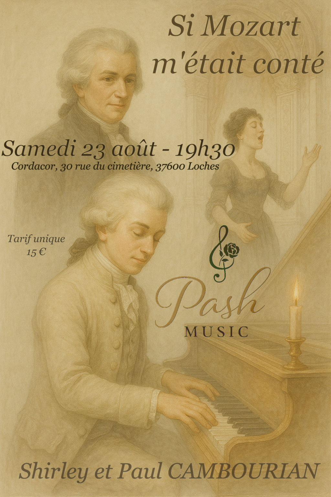

Concerts & Spectacles
Récitals lyriques, spectacles pour enfants, concerts narratifs autour des grands compositeurs…
- “Si Mozart m’était conté” 
- Récital voix-piano thématique
Et si Mozart vous était raconté comme une histoire dont vous pouviez décider le cheminement ? C’est le pari de ce concert original imaginé par Shirley et Paul Cambourian, mêlant chant, piano et théâtre pour retracer la vie de l’un des plus grands génies de l'histoire de la musique.
Mais ici, le déroulé n’est pas figé : c’est le public qui choisit ce qu’il souhaite explorer. L’enfance prodige ? Les opéras ? Ses amours, ses doutes, ses œuvres oubliées ? Les artistes vous emmènent dans un parcours ludique et sensible à travers des extraits emblématiques : airs des Noces de Figaro, de Don Giovanni, œuvres pour piano, moments intimes ou spectaculaires.
Une invitation à (re)découvrir Mozart avec fraîcheur, curiosité… et un zeste d’imprévu.